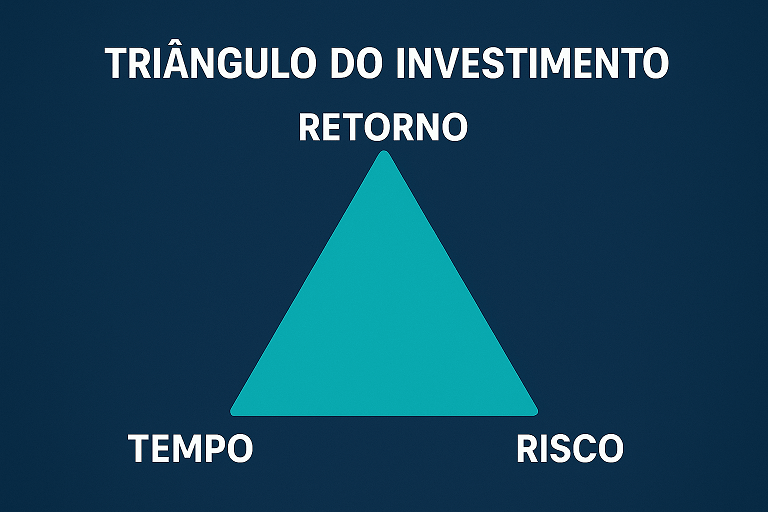

O eterno triângulo dos Investimentos: Risco, Tempo e Retorno

Antes de investires, é fundamental compreenderes o chamado triângulo dos investimentos, que representa o equilíbrio entre três variáveis essenciais: risco, tempo e retorno esperado. Este triângulo ajuda a perceber as limitações e compensações inevitáveis quando se toma qualquer decisão de investimento.
🔺 Como funciona o Triângulo?
A lógica é simples: não é possível maximizar as três variáveis em simultâneo. Em qualquer investimento, vais ter de “sacrificar” uma delas para conseguires potenciar as outras duas.
- Risco: Probabilidade de perder parte ou a totalidade do capital investido.
- Tempo: Horizonte temporal necessário para obter os resultados esperados (curto, médio ou longo prazo).
- Retorno: Ganhos financeiros esperados (juros, dividendos, valorização, etc).
Exemplos práticos
1. Retorno alto + Baixo risco = Tempo longo
Investimentos como fundos de índice ou imóveis arrendados podem oferecer retornos razoáveis com risco controlado, mas exigem tempo para maturar.
2. Retorno rápido + Baixo risco = Retorno limitado
Produtos como depósitos a prazo ou certificados de aforro são seguros e acessíveis rapidamente, mas o retorno é baixo.
3. Retorno alto + Tempo curto = Risco elevado
Investimentos especulativos como ações voláteis, criptomoedas ou alguns projetos de P2P exigem tolerância ao risco.
Como encontrar o equilíbrio ideal?
Não existe uma fórmula única. A alocação ideal depende do teu perfil de risco, objetivos financeiros e prazo de investimento. Por exemplo, um investidor conservador prefere sacrifícios no retorno para garantir segurança, enquanto um investidor jovem e agressivo pode tolerar riscos em troca de maior valorização.
E os empréstimos P2P?
Os empréstimos P2P posicionam-se geralmente no meio do triângulo. Oferecem retornos acima da média dos produtos tradicionais e podem ter prazos flexíveis, mas requerem uma análise cuidadosa do risco associado. Diversificação, garantias (colaterais) e qualidade do originador são fatores críticos.
Em resumo, compreender este triângulo ajuda-te a tomar decisões de investimento mais conscientes e alinhadas com a tua realidade.